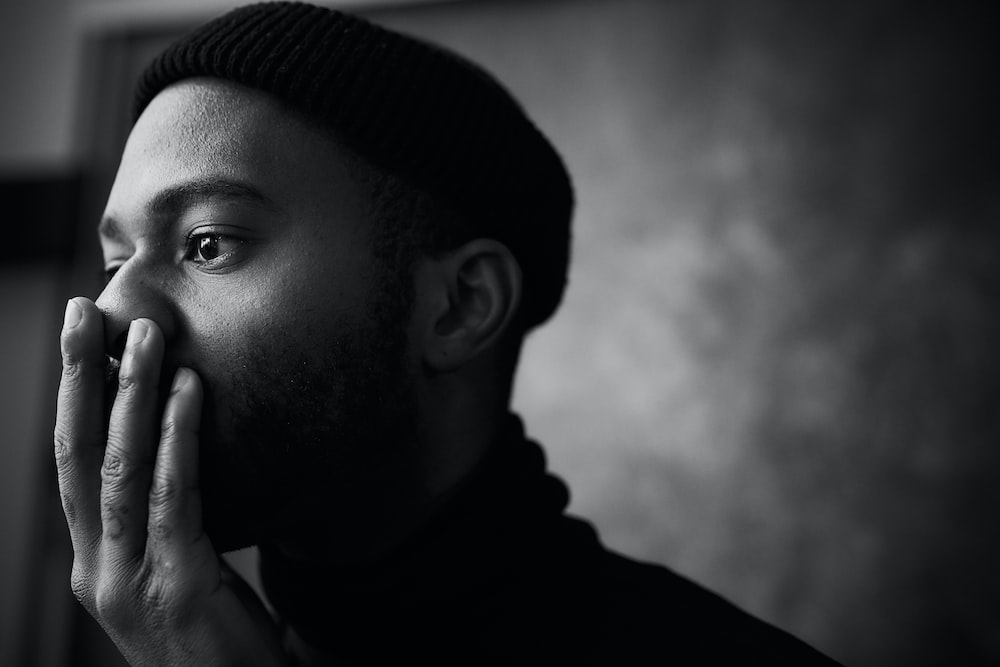

Have you ever experienced a situation where you were consistently told you were wrong about a decision? This was exactly what I felt when I decided to halt enrolling in a Ph.D. program and pick up a new adventure to explore other areas of my life.

ü§î This got me Thinking
I had big plans when I completed my undergraduate degree. I was later to find out that most of my daily duties at work will be repetitive tasks that do not involve creating any innovative solutions to real-world challenges. And this was not the kind of work I had dreamt of doing for the rest of my life. I thought maybe an undergrad degree wasn’t enough, so I pursued a master’s degree with the idea to improve my skillset. I put in the work and the time to complete my second degree yet I was still not satisfied with the kind of problems I was solving with my newly acquired skills.
üòü Where does this road lead To?
Fast forward 9 years later, here I am having completed my bachelor‚Äôs in accounting and finance and my master‚Äôs degree in public administration. Here I was with my certificate in my hands, living in a foreign country, and having no idea what the future holds for me. I started recounting the decisions I have made in my life. Did I make the right choices? was it even a good idea to move from my country to study in another country? I felt a big hole in my life. I still remember the day I was handed my certificate. I remember saying to myself ‚ÄúAfter all this toil and suffering and this is what I get? A piece of paper üòÅ!!‚Äù
To be fair, I really enjoyed my life as a master’s student but deep down within me, I felt there was nothing life-changing contribution I could offer to solve some of the world’s most challenging problems in my society. I was eager to make a change and not any change but a big one. The next phase of my life was to naturally enroll in a Ph.D. program. I couldn’t live with the fact of heading straight into a Ph.D. program without discovering who I really am. So I decided to take a break from academics to find myself. I wanted to know more about myself and what matters most in my life. This was not an easy choice to make. This was the time almost all my friends are enrolling in one Ph.D. program or the other.
Moment of Enlightenment…
Upon realization of how I have been bouncing through schools, looking for some kind of purpose in my education, making all the right choices(so I thoughtüòÄ), sleepless nights, handing in dozens of assignments coupled with pulling all-nighter preparing for exams, It just hit me hard that I was just in the loop of life. I was living a life pre-designed for me even before I was born. I was just following a path that majority of people go through. i.e go to school, get a job and settle down. It occurred to me that in order to break this cycle I needed to change. And that was the turning point in my life. The pivotal point where I committed to using the remainder of my life to pursue my long-suppressed intuition of what I see as my definite purpose in life that I have intentionally ignored for over a decade. I was now ready to take life head-onüí™.
The New Path…
I started taking inventory of myself and the things that interest me most in life. Moreover, I started researching some of the key problems in the world and how to solve these problems in the most innovative way possible. I was just following my intuition at this time. I had no plan! just a burning desire to succeed.
I remember the only time I felt this way was when I was part of a business idea competition where I had the opportunity to apply my creative skills to solving real-world challenges. I cannot learn by rote. I am a visual learner and I learn by doing and conducting my own experiments with the idea of the bigger picture in mind. This is not something you usually get in the kind of rigorous education I had both in my bachelor’s and master’s degrees.
For the next couple of months, I dabbled in web development and data science. I still recall to this day the first time I got my first computer. I will sit behind that thing and imagine myself as a hacker hacking into someone else’s computer. For some weird reasons, it felt good. I wanted to be a creator of something of some sort. But the realities in my life and how important education was to my parents never gave me the time to commit to following that intuition. My academic work was so important to me at that time. It seemed to me that was the logical thing to do.
Eventually, I read about the opportunities in Artificial intelligence and Machine Learning and that blew me away. I read about the key problems these technologies are solving and how it is changing the world. Most especially in the developing world. And I decided now and then that this is the direction I want to commit the rest of my life to üíØ. This is a truly exciting field!
I am still learning and discovering new learning styles. Also, I am conducting experiments with different kinds of technologies and building amazing products in the process.
In my next couple of posts, I will be sharing about my journey and how I am learning about deep learning. I will also be sharing some interesting projects I am working on. If you’re also a machine learning enthusiast, researcher, or practitioner you can reach out to me so we can learn and work together.
I am very glad to share my stories and hope it can change your perspective about your life and what matters most to you. I will like to end with a thought-provoking quote by Steve Jobs.
Your work is going to fill a large part of your life, and the only way to be truly satisfied is to do what you believe is great work. And the only way to do great work is to love what you do. If you haven’t found it yet, keep looking. Don’t settle.